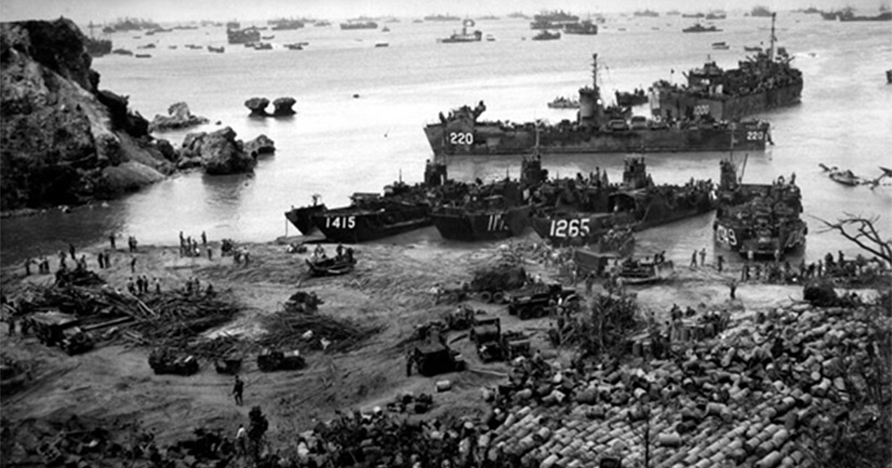
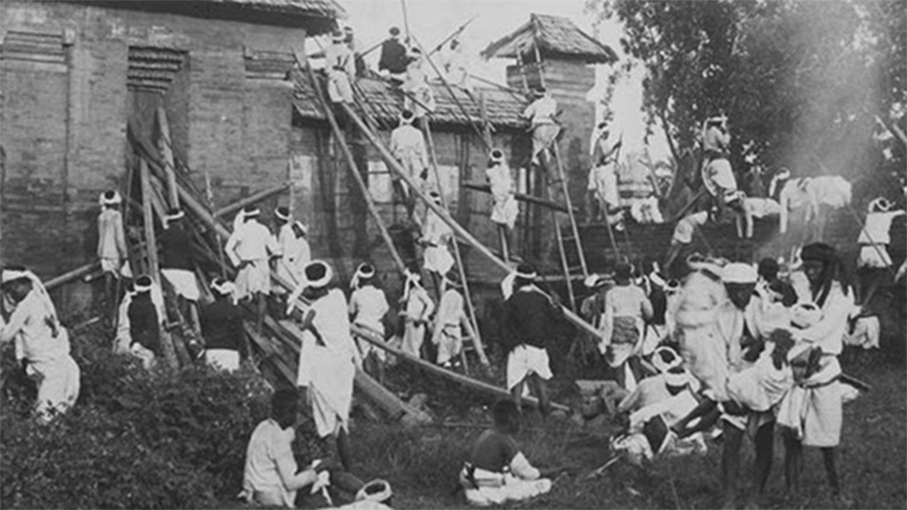
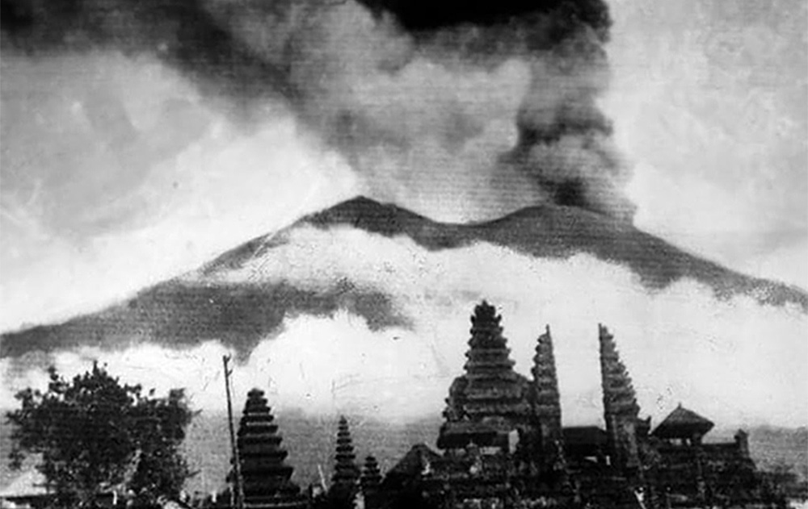
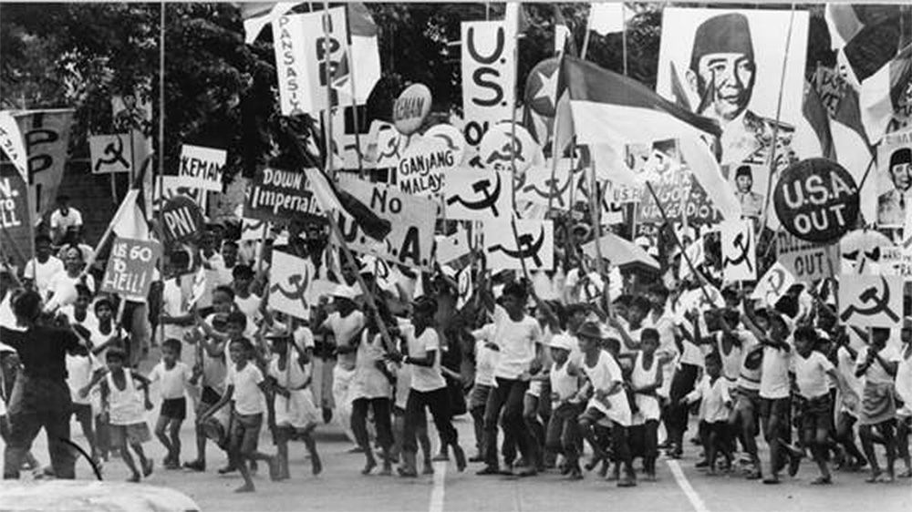
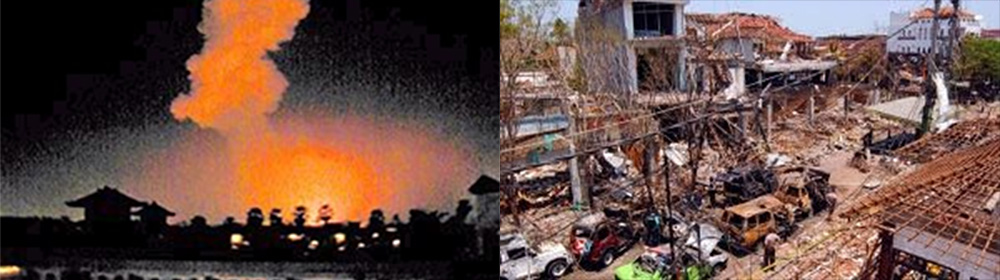

Jepang menduduki Bali selama Perang Dunia II dan saat itu seorang perwira militer bernama I Gusti Ngurah Rai membentuk pasukan Bali 'pejuang kemerdekaan'. Menyusul menyerahnya Jepang di Pasifik pada bulan Agustus 1945, Belanda segera kembali ke Indonesia (termasuk Bali) untuk menegakkan kembali pemerintahan kolonialnya layaknya keadaan sebelum perang. Hal ini ditentang oleh pasukan perlawanan Bali yang saat itu menggunakan senjata Jepang.

Pada 20 November 1945, pecahlah pertempuran Puputan Margarana yang terjadi di desa Marga, Kabupaten Tabanan, Bali Tengah. Kolonel I Gusti Ngurah Rai yang berusia 29 tahun, memimpin tentaranya dari wilayah timur Bali untuk melakukan serangan sampai mati pada pasukan Belanda yang bersenjata lengkap. Seluruh anggota batalion Bali tersebut tewas semuanya dan menjadikannya sebagai perlawanan militer Bali yang terakhir.

Pada tahun 1946, Belanda menjadikan Bali sebagai salah satu dari 13 wilayah bagian dari Negara Indonesia Timur yang baru diproklamasikan, yaitu sebagai salah satu negara saingan bagi Republik Indonesia yang diproklamasikan dan dikepalai oleh Soekarno dan Hatta. Bali kemudian juga dimasukkan ke dalam Republik Indonesia Serikat ketika Belanda mengakui kemerdekaan Indonesia pada 29 Desember 1949. Tahun 1950, secara resmi Bali meninggalkan perserikatannya dengan Belanda dan secara hukum menjadi sebuah provinsi dari Republik Indonesia. Letusan Gunung Agung yang terjadi pada tahun 1963, sempat mengguncangkan perekonomian rakyat dan menyebabkan banyak penduduk Bali bertransmigrasi ke berbagai wilayah lain di Indonesia.

Tahun 1965, seiring dengan gagalnya kudeta oleh G30S terhadap pemerintah nasional di Jakarta, Bali dan banyak daerah lainnya, terjadilah penumpasan terhadap anggota dan simpatisan Partai Komunis Indonesia. Di Bali, diperkirakan lebih dari 100.000 orang terbunuh atau hilang. Meskipun demikian, kejadian-kejadian pada masa awal Orde Baru tersebut sampai dengan saat ini belum berhasil diungkapkan secara hukum.

Serangan teroris telah terjadi pada 12 Oktober 2002, berupa serangan Bom Bali 2002 di kawasan pariwisata pantai Kuta, menyebabkan sebanyak 202 orang tewas dan 209 orang lainnya cedera.

Serangan Bom Bali 2005 juga terjadi tiga tahun kemudian di Kuta dan pantai Jimbaran. Kejadian-kejadian tersebut mendapat liputan internasional yang luas karena sebagian besar korbannya adalah wisatawan asing dan menyebabkan industri pariwisata Bali menghadapi tantangan berat beberapa tahun terakhir ini.